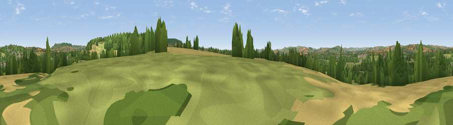

Viewpoint near Uffculme
#24268 in England · top 49% of its area beats it · near UffculmeWhere it is
The exact computed spot (ST 06125 11275). Click the marker for map links.
The view, rendered

A 360° render of this exact spot computed from the terrain model, tree cover and land cover — summer colours, afternoon light, calibrated against photographs of famous viewpoints. Real trees, hedges and buildings will differ in detail.
The panorama
Grey silhouette: terrain skyline in each direction (720 bearings, Earth curvature and refraction included). Dashed green: skyline with trees (+15 m) and buildings (+8 m) as obstacles. Blue strip: how far the ground is visible on each bearing.
Where the view opens
Wedge length = distance to the farthest visible ground on that bearing (vegetation-aware). Rings at 10, 25 and 50 km.
What fills the view
49% grassland · 32% woodland · 14% cropland · 6% built-up
Angular shares of the visible panorama (visual magnitude), not map area. Landscape diversity 0.50 (0–1 Shannon).
Key numbers
More beautiful places nearby
The staircase of upgrades: each row has a higher view potential than everything closer. Driving times are estimates from straight-line distance, calibrated against real road routing — check an actual route before setting out.
| Place | Direction | Drive | Score |
|---|---|---|---|
| Viewpoint near Uffculme | N · 2 km | ~6 min | 50.5 |
| Viewpoint near Uffculme | NNE · 3 km | ~7 min | 55.3 |
| Viewpoint near Blackborough | ESE · 4 km | ~9 min | 71.9 |
| Viewpoint near Saint Hill | SE · 5 km | ~11 min | 73.9 |
| Wellington Hill | NE · 10 km | ~19 min | 74.9 |
| Hembury | SSE · 10 km | ~19 min | 75.9 |
| Viewpoint near Bradninch | SW · 11 km | ~21 min | 77.7 |
| Raddon Hills | WSW · 18 km | ~31 min | 78.2 |
50.89330, -3.33613 · source: screening · position refined by local search. Computed location — check access rights before visiting.